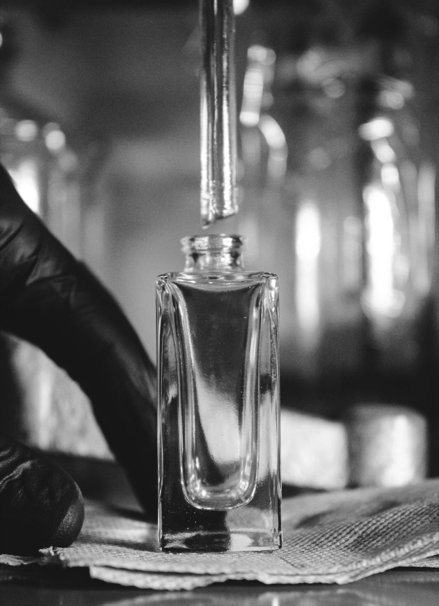

Who is Lu6 ?
W6 est une maison de parfum d'intérieur née d'une question : comment donner à chaque lieu une âme olfactive ?

Le berceau du parfum
Nos fragrances sont formulées à Grasse, capitale mondiale du parfum, selon les plus hauts standards de la parfumerie et conformes aux normes IFRA.
Sept senteurs, sept univers, pour transformer chaque intérieur en une expérience sensorielle unique.
Notre philosophie
W6 — « Who is Lu6 » — c'est la question posée à chaque espace : quelle est votre signature olfactive ? Notre réponse est une collection de diffuseurs à froid et de fragrances d'exception qui donnent une âme à chaque pièce.
La nébulisation à froid préserve chaque fragrance dans toute sa pureté, sans chaleur, sans altération. Une technologie au service de la parfumerie, pensée pour les intérieurs qui ont une histoire à raconter.
Nos engagements
- Fragrances formulées à Grasse, conformes aux normes IFRA
- Diffusion sans chaleur qui préserve la richesse des huiles
- Un parfum offert avec chaque diffuseur
- Livraison dans toute l'Union Européenne